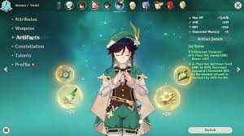

Not really a skill, but I can make a dragon(?) head out of my hands. Very weird I know, but it's something that I remember from elementary school. It's something like this.
One skill I have that's related to games, is "building" characters/knowing what stats a character needs. I pretty much only do this in Genshin Impact though.
But just to flex, my characters are prettyyyyy good. :)
